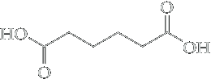
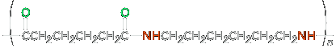
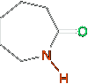
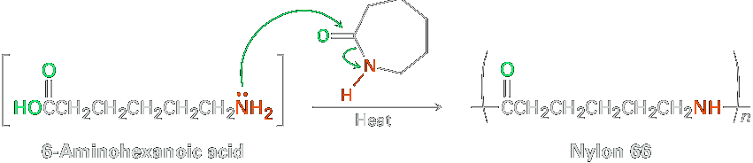
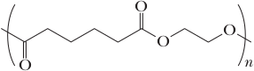
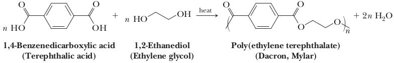
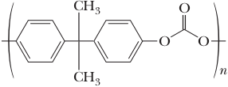
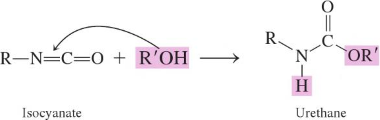

Condensation polymerisation
Polymerization can proceed according to two different mechanisms, referred to as condensation polymerization and addition polymerization.
In condensation polymerisation the basic monomer units combine through a condensation reaction by elimination of simple molecules (water, ammonia etc.) to give a product, generally of high molecular weight. Polyesters, polyamides, and polypeptides are all examples of condensation polymers.
Nylon − A polyamide
The search for a syntetic fiber led to the discovery of nylon, a polyamide that is strong and durable and resembles the silk produced by silkworms. There are several different kinds of nylon, but the most well known is called nylon 6,6. Nylon 6,6 is a copolymer, that can be synthesized by a condensation reaction between equimolar amounts of two six-carbon monomers (hence its name) that is 1,6-Hexanediamine (hexamethylene diamine) and Adipic acid (Hexanedioic acid) (Hexanedioic acid).
|  Hexanedioic acid (Adipic acid) | + | H2N−(CH2)6−NH2 Hexamethylene diamine | −H2O ⟶ Heat (Formation of amide linkages) |  | + | heat |
Nylon 66 formed under these conditions has a Tm of 250−260°C and has a molecular-weight range of 10,000 to 20,000 g/mol.
Alternatively, a single reactant with two different functional groups can polymerize. Nylon 6 is made by polymerization of the six-carbon caprolactam. The reaction is initiated by addition of a small amount of water, which hydrolyzes some caprolactam to 6-aminohexanoic acid. Nucleophilic addition of the amino group to caprolactam then propagates the polymerization.
|  Caprolactam |  |
Polyesters
Polyesters are formed by typical condensation reactions (esterification) between polyols (mutliple OH groups) and acid with formation of an ester group as the linkage between the molecules and the exclusion of water.
From adipic acid and ethylene glycol, they obtained a polyester of high molecular weight that could be drawn into fibers.
| n |  Hexanedioic acid (Adipic acid) | + | nH2O | + | n OH−CH2−CH2−OH 1,2-Ethanediol (Ethylene glycol) | ⟶ |  Polyethylene adipate |
+ | 2n H2O |
The most generally useful polyester is that made by reaction between 1,4-benzenedicarboxylic acid and ethylene glycol (1,2-ethanediol). The product is used under the trade name Dacron to make clothing fiber and tire cord and under the name Mylar to make recording tape. The tensile strength of poly(ethylene terephthalate) film is nearly equal to that of steel.
Polycarbonates
A Polycarbonate is a polyester in which the carboxyl groups are derived from carbonic acid. The most familiar is Lexan, are a class of commercially important engineering polyesters. In the production of Lexan, the disodium salt of bisphenol A reacts with phosgene to form the polymer.
| n | Bisphenol A | + | n | ⟶ |  Lexan (a polycarbonate) | + | 2n NaCl |
Polyurethanes
A urethane, or carbamate, is an ester of carbamic acid, H2NCOOH. Carbamates are most commonly prepared by treatment of an isocyanate with an alcohol.
However, in contrast to condensation reactions, no condensate is formed when the urethane bond is created. The urethane bond is formed from the reaction of an alchol or polyol with an isocyanate, as illustrated in above.